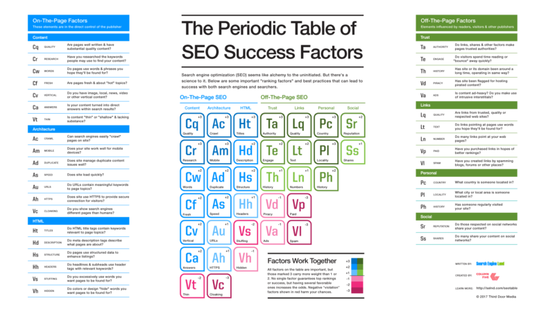

We will come to know SEO for more what it is and how to use it
SEO stands for “search engine optimization.” In simple terms, it means the process of improving your site to increase its visibility when people search for products or services related to your business in Google, Bing, and other search engines. The better visibility your pages have in search results, the more likely you are to garner attention and attract prospective and existing customers to your business.
For a helpful dive into SEO, our Periodic Table Of SEO Factors will introduce you to all the key concepts you need to know, including the elements for successful on-page and off-page SEO, plus the “Toxins” or tactics that can hurt your rankings.
The table and accompanying report also look at three niches of search:
The Periodic Table of SE O Factors serves as the foundation of this Guide to SEO. Together, these resources will help you learn about SEO and inform your strategy for success.
earch engines such as Google and Bing use bots to crawl pages on the web, going from site to site, collecting information about those pages and putting them in an index. Think of the index like a giant library where a librarian can pull up a book (or a web page) to help you find exactly what you’re looking for at the time.
Next, algorithms analyze pages in the index, taking into account hundreds of ranking factors or signals, to determine the order pages should appear in the search results for a given query. In our library analogy, the librarian has read every single book in the library and can tell you exactly which one will have the answers to your questions.
Our SEO success factors can be considered proxies for aspects of the user experience. It’s how search bots estimate exactly how well a website or web page can give the searcher what they’re searching for.
Unlike paid search ads, you can’t pay search engines to get higher organic search rankings, which means SEO experts have to put in the work. That’s where we come in.
Our Periodic Table of SEO Factors organizes the factors into six main categories and weights each based on its overall importance to SEO. For example, content quality and keyword research are key factors of content optimization, and crawlability and speed are important site architecture factors.
SEO is a fundamental part of digital marketing because people conduct trillions of searches every year, often with commercial intent to find information about products and services. Search is often the primary source of digital traffic for brands and complements other marketing channels. Greater visibility and ranking higher in search results than your competition can have a material impact on your bottom line.
However, the search results have been evolving over the past few years to give users more direct answers and information that is more likely to keep users on the results page instead of driving them to other websites.
In sum, SEO is the foundation of a holistic marketing ecosystem. When you understand what your website users want, you can then implement that knowledge across your campaigns (paid and organic), across your website, across your social media properties, and more.